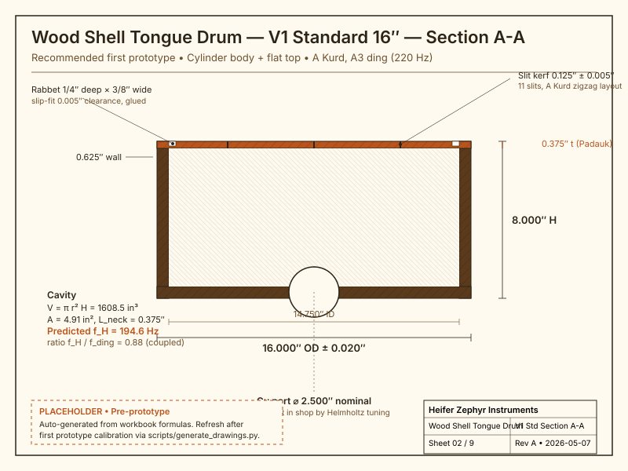

Hero — V1 Standard 16″ Section A-A

Recommended first prototype. Cylinder body in Black Walnut staves; flat Padauk soundboard with 11 slit tongues in A Kurd; gu port on bottom for Helmholtz tuning. Dimensions on the drawing are computed from the parametric workbook — change a preset cell, regenerate the drawing.
Design intent
Three things distinguish this design from a wooden version of a Hapi-style steel tongue drum:
- Round body, not rectangular. Tony's existing rectangular-prism wood tongue drum is the precursor; this design moves the same physics onto a turned cylinder or hemisphere bowl.
- Enclosed cavity. Open rectangular tongue drums waste cavity volume out the open ends. The closed bowl puts a Helmholtz resonator under the tongue field — bass extension below the lowest tongue.
- Premium tonewoods. Padauk soundboard for the A4 reference, Black Walnut shell for the bowl. No commercial wood tongue drums exist in this round-body × dome-top × premium-tonewood format at this design depth.
The four-variant matrix exists so the same shop process produces four distinct portfolio pieces with progressively retired risk. V1 first; V4 last.
Family overview
V1 — Cylinder + Flat Top ★
Lowest piece-count, most predictable tuning. 16 staves at 11.25° miter; flat Padauk disc; rabbet joint into shell rim. Standard 16″ is the sweet spot of the matrix — Helmholtz/ding ratio 0.88, all 11 tongues fit cleanly.
V2 — Cylinder + Domed Top
Same shell as V1; CNC-domed Padauk soundboard. Curved-cantilever +2.5 % length correction is the dominant uncertainty — calibrate one tongue first.
V3 — Hemisphere Bowl + Flat Top
Tagine / Moroccan-pouf silhouette. Segmented bowl ring stack of decreasing diameters; flat Padauk disc cap. Bowl projects sound upward as a parabolic reflector.
V4 — Hemisphere + Domed Top
Most steel-tongue-drum-adjacent silhouette in wood. Highest piece-count + highest empirical tuning risk. Combines V2 dome + V3 bowl — both calibrations from earlier phases roll forward.
Helmholtz coupling matrix
Each cell is the predicted Helmholtz frequency over the size's ding frequency, with the gu port at the preset diameter. Coupled regime: 0.80 ≤ ratio ≤ 1.20. All values are derived estimates; first-prototype measurements will retire the uncertainty.
| Variant | Travel 12″ | Standard 16″ | Floor Pouf 20″ |
|---|---|---|---|
| V1 — Cyl + Flat | 1.09 (tight) | 0.88 ★ | 0.99 |
| V2 — Cyl + Dome | 0.75 | 0.61 (under) | 0.67 (under) |
| V3 — Hemi + Flat | 1.22 (over) | 1.08 | 1.21 (edge) |
| V4 — Hemi + Dome | 0.83 | 0.73 | 0.81 |
V1 Standard and V1 Floor Pouf sit cleanly in the coupled band. V3 Standard is also coupled. V2 cells are under-coupled because the dome adds neck length without proportional volume; the gu port gets smaller than the preset on those builds (in-shop tuning protocol — Phase 4 of the assembly manual).
Recommended first prototype
V1 Cylinder + Flat Top, Standard 16″, A Kurd. Justification:
- Acoustic predictability — flat-cantilever physics has < 1 % empirical detuning on Tony's prior rectangular drums.
- Helmholtz coupled out-of-the-box at 0.88 × ding.
- All 11 tongues fit with 8 % margin on the radial cap.
- Lowest piece-count: 16 staves + 1 disc = 17 wood pieces.
- Validated workflow components — stave glue-up, lathe truing, CNC slit routing — exercised on Tony's existing ashiko, conga, and tongue-drum repos.
| Shell OD | 16.000″ |
|---|---|
| Shell height | 8.000″ |
| Wall thickness | 0.625″ |
| Soundboard | Padauk, 0.375″, 16″ disc |
| Shell wood | Black Walnut, 16 staves at 11.25° miter |
| Scale | A Kurd (A3, B3, C4, D4, E4, F4, G4, A4, B4, C5, D5) |
| Ding | A3 (220.00 Hz), centered |
| Tongue length (ding) | 6.454″ |
| Gu port | 2.5″ initial |
| Predicted fH | 194.6 Hz (0.88 × ding) |
Build packet
This site is one of three recruiter-facing artifacts. The packet at the repo root is the engineering source of truth.
Engineering
- design.md — governing model, variant blocks, prototype spec
- design-table.xlsx — parametric workbook (190 formulas)
- risks.md — red-team pass with verification tests
- wolfram-starter.wl — 3-DOF coupled oscillator notebook
Procurement & manufacturing
- bom.csv — full parts list with cost rollup
- sourcing.csv — supplier mapping with verified pricing dates
- cut-list.csv — stock-to-part operation list
- supplier-rfq.md — Q2 2026 batch RFQ
Assembly & validation
- assembly-manual.md — phases 0 through 7
- validation.csv — predicted vs measured per variant
- drawing-brief.md — 9-sheet drawing set spec
- drawings/00-hero-v1-standard.svg — section drawing placeholder
{kind=link}
Visual & site
- visual-bom-brief.md — BOM photography brief
- photo-shotlist.md — 30+ shot list across phases
- concepts/round-body-variants_concept-sheet.png — original concept sheet
- cad/ & cnc/ — toolpath plans
{kind=link}
Build status
The first physical prototype's measurements will retire the highest-risk unknowns:
- Curved-cantilever multiplier for our specific dome rise (V2/V4 only).
- Helmholtz end-correction term for slit ports (all variants).
- Padauk K-constant for our specific stock vs the library value (24,438).
- Bowl-top rabbet joint long-term durability under seasonal cycling.
- Player ergonomics on Floor Pouf 20″ (new size class for Tony's catalog).
Sister repos & catalog
- tongue-drum — rectangular-prism precursor
- steel-tongue-drum — steel cantilever cousin
- ceramic-tongue-drum — slip-cast cousin
- ashiko-drum-workshop — segmented bowl reference
- conga — stave & segmented shell reference
- instrument-maker — orchestrating skill and Master Catalog